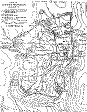

|
| A B C D E F G H I J K L M N O P Q R S T U V W X Y Z |
 The Latin Kingdom of Jerusalem was founded as a result of the First Crusade, in 1099. Destroyed a first time by Saladin in 1187, it was re-established around Saint-Jean d'Acre and maintained until the capture of that city in 1291. During these two centuries it was for Western Europe a genuine centre of colonization. As the common property of Christendom it retained its international character to the end, although the French element predominated among the feudal lords and the government officials, and the Italians acquired the economic preponderance in the cities.
The succession of kings is as follows:
The title of King of Jerusalem continued to be borne in a spirit of rivalry: by the Kings of Cyprus belonging to the House of Lusignan; and by the two Houses of Anjou which claimed to hold their rights from Mary of Antioch. In 1459 Charlotte, daughter of John III, King of Cyprus, married Louis of Savoy, Count of Geneva, and in 1485 ceded her rights to Jerusalem to her nephew Charles of Savoy; hence, from that time up to 1870, the title of King of Jerusalem was borne by the princes of the House of Savoy.
Towards the middle of the twelfth century, when the Kingdom of Jerusalem had attained its greatest dimensions, it comprised the entire coast of Syria from Beirut on the north to Raphia on the south. On the northeast its territory, bounded by the Lebanon district, which separated it from the Moslem principality of Damascus, was hardly more than a few leagues in breadth; on the southeast it extended beyond the Dead Sea and the Jordan as far as the Arabian Desert and even included the port of Aïla on the Red Sea. In the north the Countship of Tripoli was under the suzerainty of the King of Jerusalem. But in the very interior of the kingdom the power of the king was checked by numerous obstacles, and the sovereignty belonged less to the king than to the body of feudatories whose power was centered in the High Court, composed of vassals and rear-vassals. Its authority governed even the succession to the throne, in event of dispute between two members of the royal family; it alone was empowered to make laws or "assizes", and to its initiative was due the compilation of the "Assizes of Jerusalem", erroneously ascribed to Godfrey of Bouillon. The king took an oath in presence of this court and had no right to confiscate a fief unless in accordance with the regular judgment of that assembly. Moreover, if the king were to violate his oaths, the assizes formally proclaimed the right of the lieges to resist. The High Court, presided over by the constable or marshal, assembled only when convoked by the king; in judicial matters it constituted the supreme tribunal and its judgments were without appeal: "Nulle chose faite par court n'en doit estre desfaite" (Assizes, I, clxxvii). A "Court of the Burgesses", organized in the twelfth century, had analogous jurisdiction over the burgesses and could sentence to exile or even condemn to death. In the great fiefs mixed courts of knights and burgesses had similar control independently of the liege. Even within these limits the king was incapable of compelling vassals to fulfill their feudal obligations. Domiciled in impregnable castles, the architecture of which had been perfected after Moslem models, the nobles led an almost independent life. A fief like that of Montréal with its four castles of Crac, Crac de Montréal, Ahamant, and Vau de Moïse, situated between the Dead and Red Seas, formed a really independent state. Renaud de Châtillon, who became Lord of Montréal in 1174, himself waged war against the Moslems, whom he terrified by his cruise in the Red Sea, and his individual policy was counter to that of King Baldwin VI, who was powerless to prevent him from waging war against Saladin.
The Church, at this period, was also a power independent of the kings, and, with the exception of the king, the Patriarch of Jerusalem was the most important personage in the realm. After the First Crusade a very powerful Latin Church was established in Palestine; numerous monasteries were founded and received large donations of landed property in Palestine as well as in Europe. Some patriarchs, especially Daimbert, who was at enmity with Baldwin I, even endeavoured to found a power thoroughly independent of royalty; nevertheless, both of these powers generally lived in harmony. The Patriarch of Jerusalem, who was elected by the clergy and acclaimed by the people, had his powers confirmed by the pope, who continued to exercise great authority in Palestine. Moreover, the orders of religious knighthood, the Hospitallers of St. John, organized in 1313, the Templars founded by Hugh of Payens in 1128, and the Teutonic Knights created in 1143, formed regular powers, equally independent of Church and State. Most lavishly endowed, they soon owned an incalculable number of fiefs and castles in Palestine and in Europe. In spiritual matters they were directly subject to the pope; but the king could not interfere in their temporal affairs, and each of the three orders had its own army and exercised the right of concluding treaties with the Moslems.
Although royal authority was restricted to rather narrow limits by these various powers, it nevertheless succeeded in having at its disposal resources adequate to the defence of the Christian states. Its financial revenues were more considerable than those of the majority of the European princes of the twelfth century, amongst the most profitable sources of income being the customs duties enforced at all the ports and of which the register was kept by natives who wrote in Arabic. The king also levied toll upon caravans, had the monopoly of certain industries, and the exclusive right to coin money. At times he obtained from the court of barons authority to levy extraordinary taxes; and in 1182, in order to meet the invasion of Saladin all revenues, even those of the Church were subjected to a tax of 2 per cent. Although the kings of the twelfth century were surrounded by high officials, and kept a sufficiently grand court, at which Byzantine etiquette ruled, they devoted most of their income to the defence of their kingdom. Their vassals owed military service, unlimited as to time, unlike the prevailing Western customs, but in exchange they received pay. Moreover, the king enlisted natives or foreigners, settling on them a life-annuity- or fief de soudée; a light cavalry of Turcopoles mounted and equipped in Saracenic style, Maronite archers from the Lebanon, and Armenian and Syrian foot-soldiers completed the list of this cosmopolitan army of which the effective force was hardly over 20,000 men, some few hundreds of them being knights. To these regular resources already mentioned we must add the bands of crusaders constantly arriving from Europe, but whose turbulence and lack of discipline often rendered them more of an encumbrance than a help; besides, many considered that, having once engaged in combat with the Moslems, they had accomplished their vows and therefore returned to Europe, thus making continuous warfare well nigh impossible. This explains why with the well-organized Moslem states arrayed against it, the Kingdom of Jerusalem could only dispute the ground foot by foot for two centuries.
Nevertheless, despite its imperfect organization, the economic prosperity of the Latin kingdom attained an extraordinary height of development in the twelfth century. In order to repopulate the country, Baldwin I held out inducements to the Christian communities dwelling beyond the Jordan; in 1182 the Maronites of the Lebanon abjured their Monothelite heresy. Most of the natives did likewise, and constituted the influential middle class or burgesses of the various cities, having the right to own land and an autonomous administration under magistrates called reis. In the ports, the Italian cities of Genoa, Venice, and Pisa, and the French cities of Marseilles, Narbonne, etc., received grants of houses and even of districts independently administered by their own consuls. Each of these colonies had lands or casaux on the outskirts of the city, where cotton and sugar-cane were cultivated; the colonial merchants had the monopoly of commerce between Europe and the East, and freighted their out-going ships with costly merchandise, spices, China silk, precious stones, etc., which the caravans brought from the interior of Asia. Industries peculiar to Syria, the manufacture of silk and cotton materials, the dye-works and glass factories of Tyre, etc., all helped to feed this commerce, as did also the agricultural products of the land. In exchange, the Western ships brought to Palestine such European products as were necessary to the colonists; two flotillas sailed yearly from Western ports, at Easter and about the feast of St. John, thus ensuring communication between Palestine and Europe. Thanks to this commerce, during the twelfth century the Kingdom of Jerusalem became one of the most prosperous states in Christendom. In the castles, as in the cities, the Western knights loved to surround themselves with gorgeous equipments and choice furniture, the latter often of Arabian workmanship. In Palestine there was a marked development along artistic lines, and churches were erected in the towns according to the rules of Roman architecture. Even now, the cathedral of St. John at Beirut, built about 1130-1140 and transformed into a mosque, shows us the style of edifice reared by Western architects, its structure recalling that of the monuments of Limousin and Languedoe. The specimen of ivory used as a binding for the Psalter of Mélisende, daughter of Baldwin II, and preserved in the British Museum, displays a curious decoration in which are combined designs of Byzantine and Arabian art. But it was military architecture that reached the greatest development and probably furnished models to the West; even today the ruins of the Crac of the Knights, built by the Hospitallers, astonish the beholder by their double gallery, their massive towers, and elegant halls. The Kingdom of Jerusalem, established as a result of the First Crusade, was thus one of the first attempts made by Europeans at colonization.
APA citation. (1910). Latin Kingdom of Jerusalem (1099-1291). In The Catholic Encyclopedia. New York: Robert Appleton Company. Retrieved April 26, 2010 from New Advent: http://www.newadvent.org/cathen/08361a.htm
MLA citation. "Latin Kingdom of Jerusalem (1099-1291)." The Catholic Encyclopedia. Vol. 8. New York: Robert Appleton Company, 1910. 26 Apr. 2010 <http://www.newadvent.org/cathen/08361a.htm>.
Transcription. This article was transcribed for New Advent by Donald J. Boon.
Ecclesiastical approbation. Nihil Obstat. October 1, 1910. Remy Lafort, S.T.D., Censor. Imprimatur. +John Cardinal Farley, Archbishop of New York.
Contact information. The editor of New Advent is Kevin Knight. My email address is webmaster at newadvent.org. (To help fight spam, this address might change occasionally.) Regrettably, I can't reply to every letter, but I greatly appreciate your feedback — especially notifications about typographical errors and inappropriate ads.
{kind=link}